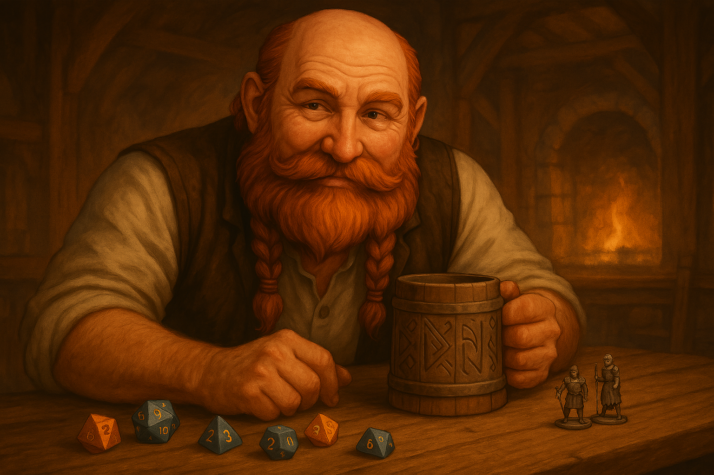

Fenrick Barrelborn
Fenrick Barrelborn is the heart and hearth of Fen’s Place — a jovial, broad-shouldered dwarf with a voice that could drown out a tavern brawl and a laugh that could end one. Raised among stone halls and stew pots, Fenrick left his mountain home not for gold or glory, but to craft a different kind of legacy: stories shared over mugs of ale and adventures born by the firelight.
As a Curator, Fenrick specializes in cozy, character-driven tales filled with warmth, whimsy, and the occasional wrestling match with a pickled troll. His sessions are part story, part supper, always welcoming. Players will find comfort in his pacing — steady, generous, and grounded. But don't let the soft belly fool you: Fenrick’s rules are rules... until they aren’t.
He speaks in hearty metaphors and believes a good game is like a stew — everyone brings something, and it takes time to get it just right. If you’re new to roleplaying or want a session that feels like home, Fenrick is the keeper of your next tale.